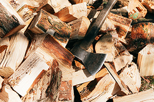

Tree removal in Atlantic County involves much more than just cutting down a tree and hauling it away. Many homeowners are unaware of the intricate details and considerations that come into play. Many factors need to be considered. Homeowners and professionals need to think about things such as the need to regard the local ecosystem, legalities, and the potential afterlife of the tree material. In this blog post, we’ll shed light on some lesser-known aspects of tree removal. We’ll focus on the significant impact on wildlife, the critical importance of hiring a licensed and insured company, and the eco-friendly possibilities for recycling and reusing the wood. These insights aim to equip you with the knowledge to make informed decisions that benefit your property as well as the surrounding environment.
Consider Wildlife When Scheduling Tree Removal Services
The impact of tree removal on local wildlife is a critical consideration often overlooked in the planning process. Trees serve as vital habitats for a myriad of species. Birds, squirrels, insects, and microorganisms all us trees as habitat and food sources. These organisms play a crucial role in maintaining biodiversity in Atlantic County. When a tree is removed, it can disrupt local ecosystems. This can lead to loss of shelter, nesting sites, and food sources for these creatures. It’s essential to assess the environmental impact before proceeding with tree removal. Strategies such as conducting wildlife surveys, choosing the right time of year to minimize disruption (especially outside of nesting seasons), and implementing replacement planting can mitigate these effects. By understanding and addressing the potential consequences on wildlife, homeowners and tree removal professionals can contribute to the preservation of our local ecosystem.
Licensing and Insurance is Essential for Tree Removal in Atlantic County
Hiring a licensed and insured tree removal company in Atlantic County is more than just a matter of due diligence. Ensuring this coverage is a safeguard for homeowners against potential liabilities and damages.
A licensed company is recognized by local authorities as being compliant with the standards and regulations governing tree removal. This ensures that the work is done safely and legally. Furthermore, licensed professionals are more likely to be up-to-date on the latest techniques and environmental considerations, ensuring that the tree removal is conducted in an ethical and sustainable manner.
Insurance, on the other hand, provides a safety net against accidents that could occur during the removal process. This includes property damage to your home or neighboring properties, as well as injuries to workers or bystanders.
By choosing a company that carries comprehensive liability and workers’ compensation insurance, homeowners protect themselves from unforeseen expenses and legal complications. Therefore, selecting a licensed and insured company is a crucial step in ensuring that the tree removal process is responsible, safe, and legally compliant.
Reuse the Wood from Removed Trees When Possible

The recycling and reuse of wood from tree removal offer a sustainable solution that benefits the environment and the community. In Atlantic County, wood that is not infested or infected can be repurposed in various ways. This wood can be transformed into mulch for landscaping, contributing to soil health and moisture retention. It can also be cut into firewood, providing a renewable energy source for heating during the colder months. Additionally, creative repurposing into furniture, art, or other wood products can extend the life cycle of the tree and reduce the carbon footprint associated with manufacturing new goods. By choosing to recycle and reuse wood, homeowners and tree removal companies can play a significant role in promoting sustainability. This approach conserves landfill space and also supports a circular economy, where materials are kept in use for as long as possible, demonstrating a commitment to environmental stewardship.
Tree Removal in Atlantic County is an Intricate Process
In conclusion, tree removal in Atlantic County encompasses far more than the mere act of cutting down trees. It involves the consideration for the local ecosystem, the importance of licensing and insurance, and the ability to recycle/reuse wood. By understanding these facts, homeowners can make informed decisions. This knowledge ensures the safety and legality of the removal process. Furthermore, it contributes positively to environmental sustainability and community welfare. As we continue to navigate the delicate balance between maintaining our landscapes and preserving our natural habitats, it’s clear that thoughtful, responsible tree removal practices are essential. Let’s embrace the opportunities to protect wildlife, safeguard our properties, and repurpose natural resources in meaningful ways. Together, we can ensure that tree removal in Atlantic County reflects our commitment to ecological responsibility and our community’s well-being.
For tree removal in Atlantic County and many other tree services contact Ben Bivins Tree Experts today!